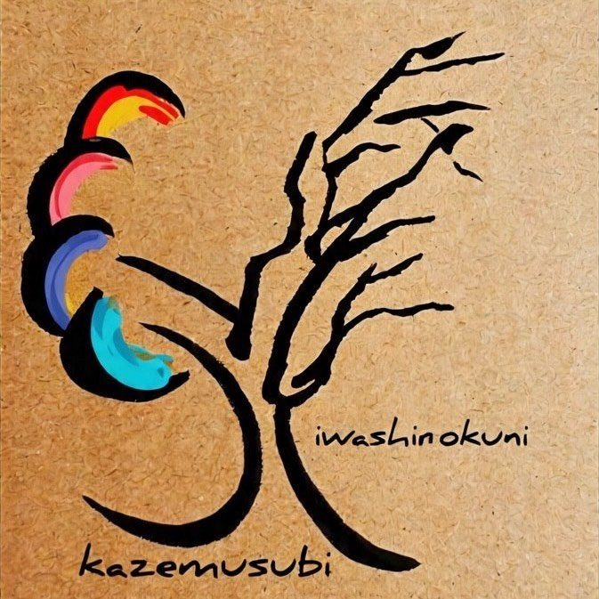
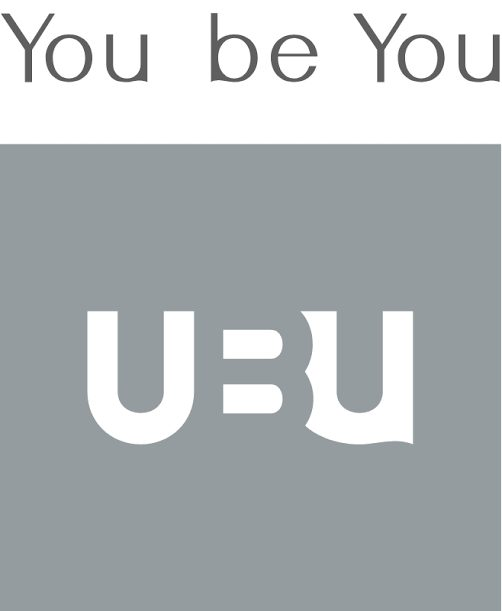
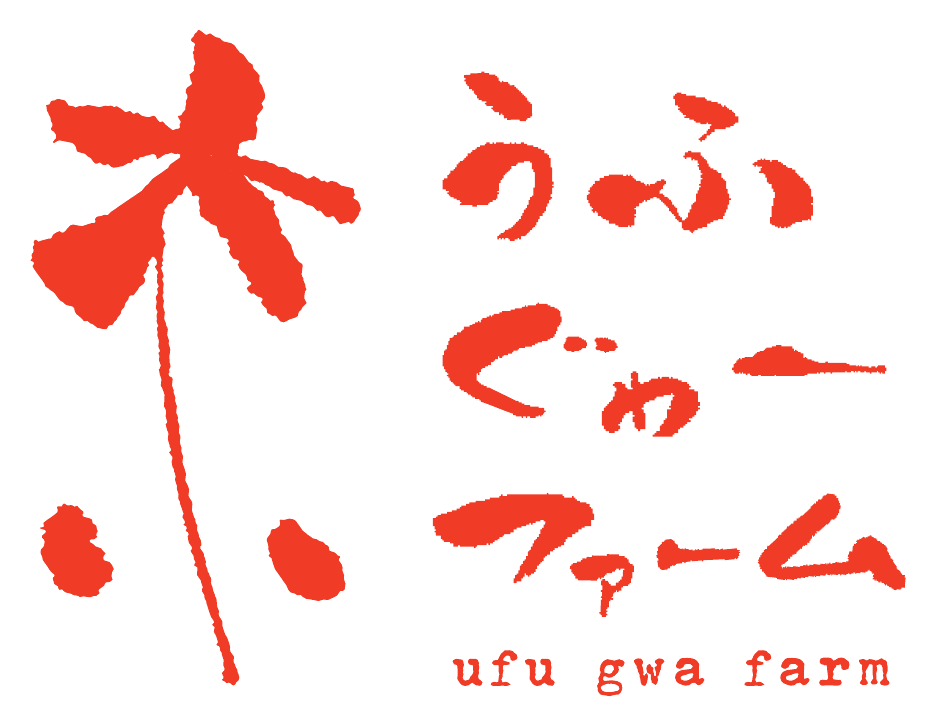

A list of the actual projects on the ground.
Sorted into three groups: ongoing, complete, and upcoming.
Starting a new natural farm from scratch in a village at the headwaters. We are developing it as a base for rice, soybeans, and vegetables.
Clearing paddies left idle for several years and bringing rice back. This village sits at the very top of the water cycle, at the source.
Restoring an old house to welcome families with children. We are developing it as a base where everyone can stay overnight.

2025– ｜ with Iwashiro-kuni Kazemusubi ｜ Isasumi Shrine, AizumisatoCaring for springs, streams, mountains, and soil. Year-round work with Iwashiro-kuni Kazemusubi, including the restoration of the sacred grove at Isasumi Shrine.
Trialing rice cultivation that does not depend on large tractors, in a heavy-snow region at 800 m elevation. The near-term target is 360 kg per 1,000 m².
From sourcing used machinery and equipment to repair and installation. This underpins our premise of small, low-cost machines suited to hilly terrain.

with YouBeYou Inc. ｜ AizumisatoA working community that connects city and farm around a circular way of life. Together we design relationships that let everyone involved keep standing on the production site.
Elementary school classes, high school camps, and joint research with universities. We open the village as a place for learning.

with G-with Inc. ｜ Motobu, OkinawaUnder the banner of IKIGAI — a society where people can live happily to the end — newcomers are taking over the farm. It made a fresh start as a new farm in 2026.
From a few days at a time, during busy periods such as rice planting and harvest. There is no limit on numbers.
A day to share the year's harvest with everyone who took part. Partners are welcome to stay overnight.
Take part in or support SHINDO
Building the foundations of life in Aizu and Oku-Aizu.
A path toward a new kind of abundance.
Published by ZEN-BU Inc.